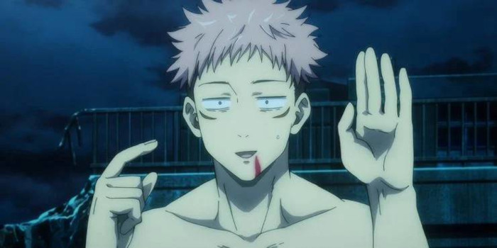
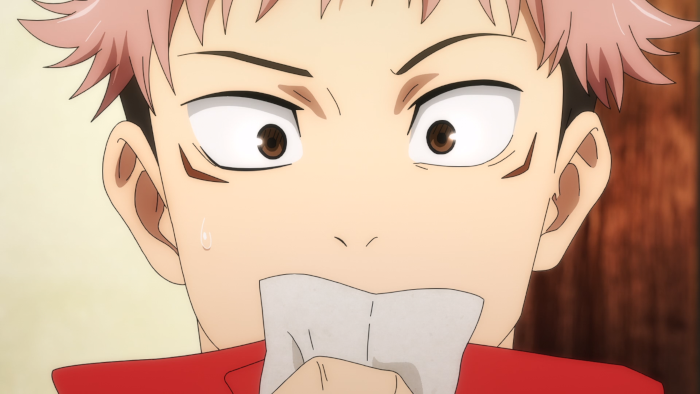

Imagens Do Anime



Sinopse
"Sofrimento, arrependimento, vergonha: os sentimentos negativos dos humanos tornam-se Maldições que assolam o nosso dia-a-dia. Maldições avassalam o mundo todo, levando as pessoas a sofrer terríveis acidentes, levando até mesmo à morte. E pra piorar, Maldições só podem ser exorcizadas por outras Maldições. Itadori Yuji é um garoto com tremenda força física que leva uma vida colegial absolutamente normal. Certo dia, para salvar amigos que estavam sendo atacados por Maldições, ele engole o dedo do Ryomen-Sukuna, absorvendo sua Maldição. Desse momento em diante, Gojo e o Ryomen-Sukuna compartilham o mesmo corpo. Orientado pelo mais poderoso dos feiticeiros, Gojo Satoru, Itadori se matricula no Colégio Técnico de Feitiçaria de Tóquio, uma organização que combate as Maldições... e assim começa a heróica lenda do garoto que tornou-se uma Maldição para exorcizar uma Maldição, uma vida da qual ele nunca mais conseguirá se desvencilhar."
Aberturas
Primeira Abertura
Segunda Abertura
Para assitir Clique aqui